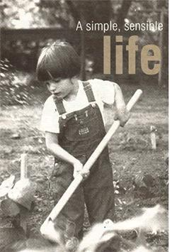
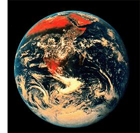

VIEW POINT
In his speech to the first Earth Day participant in April 1970, organizer Denis Hayes made it clear the event was a beginning, not a one-hit wonder. "If the environment is a fad, it's going to be our last fad," he announced to the thousands gathered that bright, spring day in Washington, D.C. "We are building a movement, a movement with a broad base, a movement which transcends traditional political boundaries. It is a movement that values people more than technology, people more than political boundaries, people more than profit."
Idealistic words for an idealistic generation. And the fact is, that idealism paid off. Concern for a clean, healthy environment has become a part of our national ethos. Not one that's heeded at all times by a people, but one that's here to stay. Remember: Earth Day wasn't handed down to Americans from on high by an anonymous, all knowing government, nor by savvy corporate marketers. It arose because a concerned and educated citizenry was calling for a response to the environmental hazards that seemed to be erupting at every turn. American citizens decided accepting a deteriorating environment was not good enough for them. We expected change, and we produced it. That fact is both a history lesson and a blueprint.
One of the most dramatic changes many of us made during the late 1960s and early '70s was the belief-no, the certainty-that the Earth is not made up of humans and a huge, dumb collection of things-trees, rocks, rivers, animals, air-for us to shove around and exploit in any old way we please. We read Rachel Carson and Aldo Leopold, Alan Watts, Pierre Teilhard de Chardin, Frances Moore Lappe, Ram Dass and others on a long, nourishing list. We shifted our perspective, slowed ourselves down and began to notice the world as a living, breathing beauty, an animate environment of which we humans are a portion, but not its possessors. We saw that we belong to the Earth, it does not belong to us. Our planet, our home, is not a dead carcass awaiting whatever butchery, feeds our latest hunger. It lives; we live in it and only in it. This is the knowledge of which transformations are made.
Seeing the photos of the Earth taker:` from the Apollo space missions, we understood once and for all how tiny wpb were amid ineffable vastness. We realized"` for the first time how finite our resources are and how inescapably our destinies are interwoven with that of our precious, perfect planet. We called it our Little Blue Marble, quoting Apollo 17 astronaut Charlie Duke, who described Earth after seeing it from the moon. The phrase became trite with overuse, but at that time it gave us a means to express an affection for Earth we hadn't had the language to articulate. When in history had the human race been able to grasp so utterly and so graphically our place in the web of life? As with other moments of falling in love, once we truly saw the world and our connection to it, nothing could ever be the same.
For some, the environmental movement has always been about standing at a barricade, drawing attention to the horrendous, the outrageous, or simply the unfair in relation to human interaction with the environment. Protest can be valuable because it draws attention to an issue, draws a line in the sand. Rebellion can spark, but it cannot sustain change. Rebellion alone doesn't provide context, and without context humans cannot alter their behavior. Earth Day was born out of broad-based citizen insistence that attention be paid to the environment: It was, first and foremost, an enormous educational event. It provided a context for thousands and thousands of people to think differently about the environment. And that thinking changed us forever.
› For many of us, this education has been a work in progress ever since. We don't see ourselves necessarily being involved in a movement, but in motion, a timeless two step that partners the Earth's needs with our own. What we appreciate becomes more simple, and sometimes distressingly difficult to find. We embrace sensibility-making sense, being deeply acquainted with our senses. We want to taste our food and find it delicious-pure, full of health and flavor. We want to feel our bodies from the inside out and know they are as healthy as our choices can make them. We want to smell the air and feel the yearning of our lungs for more, rather than the shying away and shutting down that occurs when air is foul. We want to know the sweetness of sparkling, clean water. We want the solid confidence of knowing we can create and craft our own solutions to the situations we face.
We sense community built to human scale is the only thing that will allow the unpredictable beauty of our natures to emerge. Otherwise we are things, not beings. We want communities-rural, urban, suburban-that have emotional and physical space for beings, communities woven with elastic, not rigidly hammered into place. We want to see technology and industry serve nature and community, not the other, dreary way around.
That Little Blue Marble photo juxtaposed with a photo of my son working in our little garden represent the strands of a thread woven through many of our lives since those early Earth Days. My pursuit of the personal-a healthy garden, nutritious food thoughtfully prepared for those I love, a domestic life that nurtured my children, an existence as homespun as I could manage, a life that was kind to the Earth-rooted me in the World Out There, microcosm reflecting and connecting to macrocosm. Life nurturing life nurturing Life.
Some of us let those early sensibilities slide during the '80s and '90s as we marched off in pursuit of other goals. Others never strayed from those earlier values and are richer now for their steadfastness. Recent events have reawakened all of us in varying degrees to the vastly interdependent nature of life here on our beautiful Earth. We find ourselves asking with renewed urgency what life on this planet needs, not only to survive, but to thrive-and looking to see how we can provide for those needs. We'll all come up with different answers, but in the end the actions we take will add up to something worthy.
Earth Day, every day. It's not too much to expect.
K. C. Compton is managing editor of
Mother Earth News. A
journalist for 20 years in New Mexico and Wyoming, she is working on a book about being on the front lines of social change while living in the country's heartland during the 1960s and '70s.
|
 In 1975, Austin Smart (the author's son) does his own work in Oklahoma's good earth, helping tend the garden, which produced corn, beans and an embarrassment of tomatoes. |
 The Apollo 17 astronauts took this photo, which shows the Arabian Peninsula and Africa, as they left Earth orbit en route to the moon on Dec. 7, 1972. This view of the Earth from space drove home how finite and precious our resources are. |
|